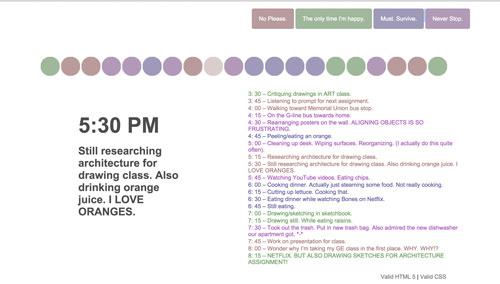

February 3, 2016
Exercise #4
Pocket Full of Interface
For Exercise #4, I had 5 really random items and I wasn't sure how they would all fit together. Since they were all located from within my backpack, I decided that my backpack would be the connection for every object. Pretty simple, but effective in my opinion, especially after the example shown in class.
I use Illustrator to draw the items in a cohesive style so the website as a whole would fit. I had an 8bit typeface for the headers at first, but I decided it didn't really match the playful design of the illustrations. I wanted to keep it fun with hovers that displayed gifs. The user would get to explore the backpack and the items are pretty distinguished.
At first I wanted it so that when a user clicks the items, an overlay with text about the item would show up, but that would be a little overkill. So I wanted the click and dialogue box method, but I felt like I wouldn't have enough time to do it, so it became a hover! I think the gifs, illustration theme, and the use of my backpack support effective and interesting interface design.
January 27, 2016
Exercise #3
Time is on my Side
For Exercise #3, I wanted to create this timeline of dots that the user could interact with. That became way too difficult too accomplish, so the final project is just a line of circles that the user can hover over to see the event associated with each circle.
The screen starts off with only circles and the buttons so the user can explore the page. I want the users to feel curious about what the circles do. There is not too much information for the user to read and they are able to control how much is shown using the buttons. Each button reveals/hides the associated events.

The information is also clearer when the user interacts with the button. As they hover over it, the events associated with the category are bolded to increase readability.

January 19, 2016
Forms
A web-based form, which I assume is related to Exercise #2 forms and not just websites in general, I use often (or not) is the forms that are found on DeviantArt. The point of DeviantArt is to share your work, just like ArtStation, although, DeviantArt is a more friendly content-sharing website for amateurs and other media (photography, animation, sculpture, etc.)
The hierarchy of forms is clear, as the submit button is pretty large and at the top. Once clicked, the important parts of the form are at the top (the image, size, etc.). Other areas are marked with a "(Required)" label and if they are not filled in, the user cannot submit their work. The description form is next in the order from top-bottom. DeviantArt also provides an "Add Media" link so the user can sort of personalize their descriptions of artworks by adding links to other social media account, formatting font, adding emoticons, and etc. I think its sort of difficult to realize that is the link needed to do all this because "Add Media" is a little ambiguous. It could represent pictures/other artworks the user might have. So it is a little confusing. The tags are also a little frustrating to use, as one would have to type every tag every time they submit.

I wished there was a way to use old tags, which they implemented for the categories section. The Categories section is quite large, since it provides an easy way for users to submit their work into correct categories so that viewers can find what they are looking for. It is very specific and easy to use. One click brings up the sub-section and so on until the end. I wished there was a way to include multiple categories though. The forms follow some guidelines that are presented in Bill Derouchey's article on interface design. Red is an important "must fill" part.

On the homepage, the forms are a little unnecessary. There are two search bars on the top and left. One is not fixed, which makes its a little frustrating since I may want to search for something if I find an artwork that is interesting. The other one can be hard to see on the side as there is no color scheme difference from the search bar and the category tags. The positives about the interface design of the homepage are the large images of artworks (no need to squint at small thumbnails) and the color-coding throughout.
Here's a link to see Derouchey's article on interface design! LINK
January 7, 2016
Interface
An interface I love to use is from the ArtStation website. ArtStation is a form of social media that illustrators use to showcase their work. It is somewhat like a portfolio. What I love about it is the way in which they preview each artwork. The thumbnails are large enough to get a good look at each piece. They also let the artists choose what they want to showcase in the thumbnail. There are also icons that indicate if there are multiple files within the preview, as well as a program that allows 3D modelers to showcase the entire model, which allows the viewer to rotate the 3D model in every angle. When you do click on an image, the image is shown as large as possible, showing every detail and etc. The website is an easy way to look at a lot of professional artists' works and lets companies check out potential employees. It's definitely similar to DeviantArt, but in a more professional fashion. The colors and spot colors are very professional and it makes me feel all adult-like using it. The website is also responsive and looks just as amazing when you shrink the window. You can check out ArtStation here.